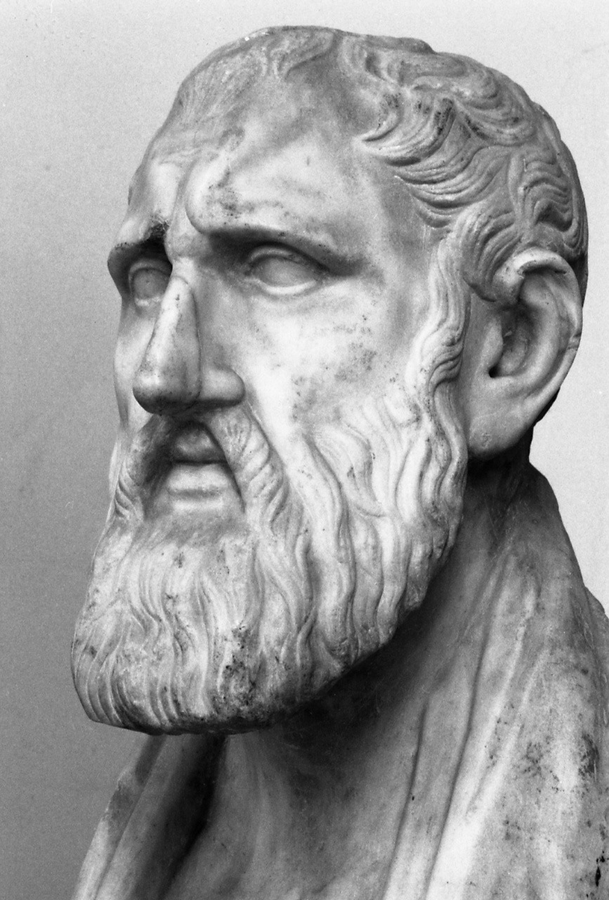
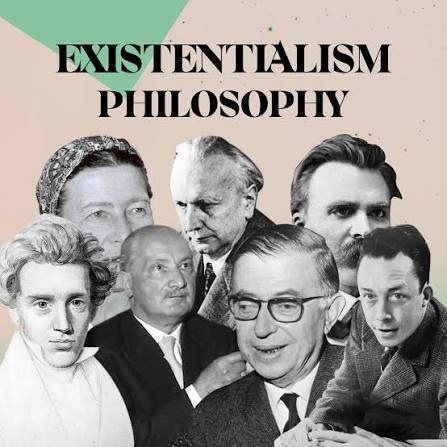
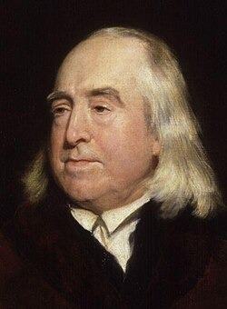
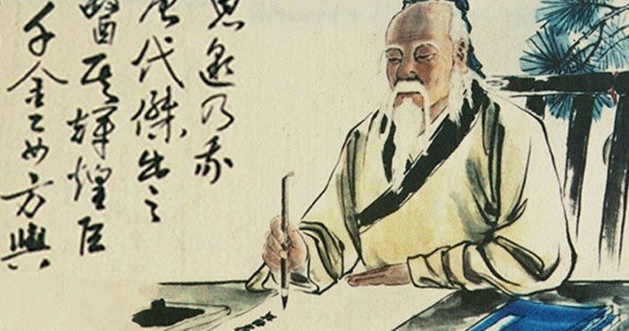

Philosophy serves as a framework for understanding existence, ethics, knowledge, and how to live a meaningful life. Across centuries and cultures, thinkers have developed distinct traditions to answer fundamental questions about the human condition.
Founded in ancient Greece by Zeno of Citium and later developed in Rome by thinkers like Epictetus and Marcus Aurelius. Stoicism focuses on personal virtue, reason, and self-control.

Key Concept:
Amor Fati (love of fate) — embracing adversity as an opportunity
for growth rather than a misfortune.
----> source
Gaining prominence in the 19th and 20th centuries through Søren Kierkegaard, Friedrich Nietzsche, Jean-Paul Sartre, and Albert Camus. Existentialism centers on individual freedom and responsibility.

Key Concept:
Radical Freedom — the idea that because you are free to choose,
you are entirely responsible for the meaning of your life.
----> source
Formulated by Jeremy Bentham and expanded by John Stuart Mill during the Enlightenment. Utilitarianism is an ethical theory based on outcomes.

Key Concept:
Consequentialism — the morality of an action is judged by its
consequences rather than by strict rules.
----> source
An ancient Chinese philosophy attributed to Laozi in the Tao Te Ching. Taoism emphasizes living in harmony with the natural order of the universe (the Tao).

Key Concept:
Wu Wei (effortless action or non-striving) — acting without struggle,
responding naturally to situations as they arise.
----> source
— End of Guide —